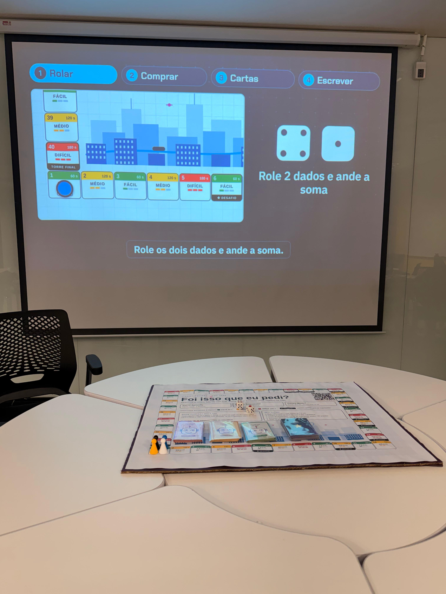
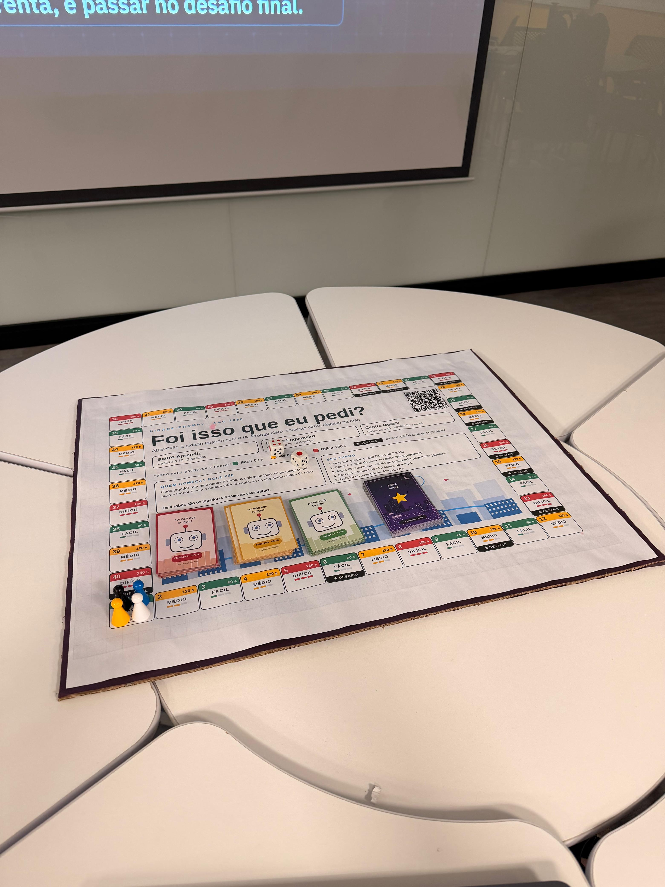
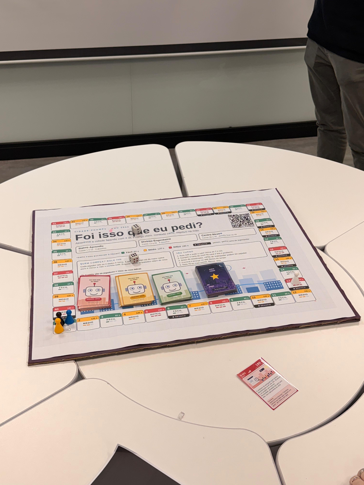

Validador de prompts offline
Simula a avaliação de uma IA: compara o prompt com o gabarito do desafio, calcula a nota e avisa sobre dados sensíveis, vieses e boas práticas de LGPD. Depois de aberto, não faz nenhuma chamada à internet. Para usar em sala sem conexão, abra esta página uma vez e salve o arquivo, ou baixe o validador em um único arquivo HTML.
Vídeo do Manual do Professor
Apresentação do manual: regras e passo a passo da aula.
Jogo físico para imprimir
Tudo o que é preciso para montar o jogo sem internet.
Tabuleiro A3Cidade-Prompt, casas 1 a 40
Cartas de problemaNíveis fácil, médio e difícil
Cartas de superpoderPara virar a partida
Versos das cartasPara imprimir frente e verso
Os 4 robôsPeças dos jogadores

Ficha do avaliadorPesos por nível
Manual do ProfessorRegras e roteiro da aula (PDF)
Apresentação final
Registros do dia em que a equipe apresentou o jogo ao professor e à banca.


